I’m a software designer; my work and skills center on UX. On the clock, I’m passionate about accessibility and automation. I solve problems using research and a data-driven approach. In my off-time I work on automation, I develop software tools, and I volunteer to support upward mobility, human dignity, and economic empowerment on both local and global scales.
In my work I want to solve meaningful problems for real people: I want to improve workflows, implementation, and accessibility. I thrive in collaborative environments: I don’t need to be right; I want to work together to set goals and achieve results.
Skills
UX & Visual Design
Usability research
visual / code prototypes
workflows
site maps
drafting
information architecture
data-modeling
mockups
wireframes
visual design
illustration
icons
branding
Development & Frameworks
HTML5
CSS3
JavaScript
jQuery
Bootstrap 4
SASS
mobile-first responsive design / development
responsive emails
Preferred Tools
Sketch
Flinto
Photoshop
Illustrator
Sublime Text
Balsamiq
Git
Soft Skills
Natural leader
project management experience
hiring experience
consulting
pitches & presentations
empathy
integrity
Experience
Software Development Engineer
Company: T‑Mobile
Software design (UX/UI) and development on a Cloud-architecture project intended for open-source
Gathering resources and modeling data to cover core usage from intake to lowest-common-denominator relationships
Defining requirements around configuration and usage
Building wireframes and prototypes to facilitate discussion around approaches
Integrating with multi-functional teams to deliver designs and software
I've worked on a variety of products including a self-documenting style guide; mobile UI prototypes for iOS and web; product taxonomies; information architecture for b2b tools; and responsive email templates in English & Spanish
Outside of work, I volunteer my design skills for non-profit organizations.
I'm also an avid reader, a muralist and painter, a farmer's market enthusiast, and I build hobby websites and products.
Case Study: UX Style Guide
Building a self-documenting style guide for Bluetooth
Overview
Role: UX Engineer - contractor - 3 months
Task: Design & develop a style guide that the entire company can leverage
I was contracted to improve the existing style guide tool, but there were many issues with the tool as described below. In the following sections I'll discuss a few of these issues and what steps I took to address them.
The problems, impacts, and goals were determined during a project planning phase. Many of the problems were complaints that the UX team had received but were unable to address with the existing implementation.
Although I was hired to make recommendations and to complete work on the existing tool, after conducting user interviews it quickly became apparent that the tool they had was too much work to maintain and was inadequate to meet their needs.
Through the interview process, the UX team was able to identify a number of issues surrounding the style guide and its usage, and the primary issues are documented in the next section.
Problem & Goal Statements
The problems we felt we could address through improvements to the style guide are highlighted in yellow below. The remainder of the issues will be addressed by the UX team through policy updates and content inventories.
Problems:
Developers aren't implementing styles from the guide
There are too many disparate styles and style sheets
There are disparate styles and UI components across platforms and tools
The style guide provides no definition on when/why to use components
The style guide website is not fully responsive
The existing style guide is poorly coded
Impacts:
User interfaces are inconsistently implemented and harder to maintain
Multiple style sheets decreases performance and creates confusion around which styles belong to which properties
Users of our products and tools are subject to an inconsistent, poor user experience
The style guide website is inconvenient for developers to use
The style guide website is difficult for designers to use and maintain
Goals:
Improved consistency of style implementation
Develop a unified set of styles
Clearly define usage guidelines around components
Remove obstacles to style guide usage
Improve underlying style guide code
Minimize maintenance effort
Research: User Interviews
Our initial round of interviews conducted with influential developers helped us identify some workflow issues and a general lack of awareness of the intent of the style guide. We were also able to confirm the frustrations with the guide that had been expressed by its few users prior to my start.
Reviewing our research data, I was able to identify 3 unique user personas:
Visual styles are not consistent between style guides
Research: Prototyping
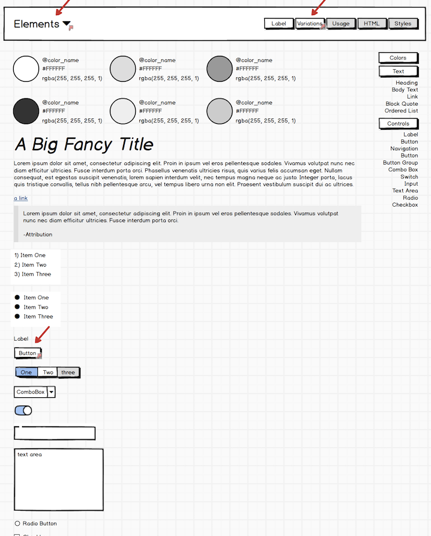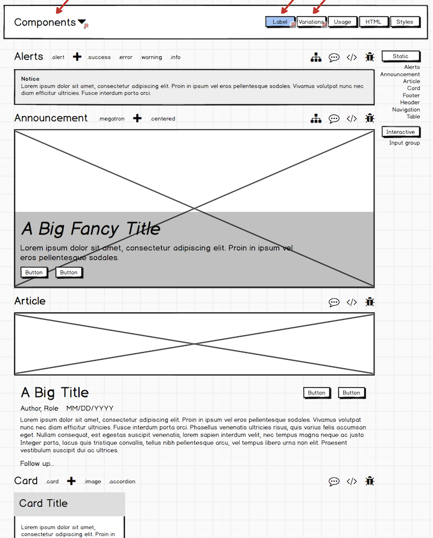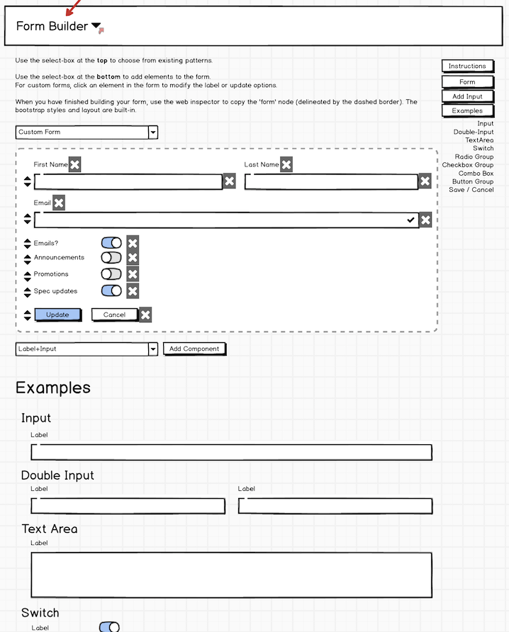(click to expand) collapse
After the initial round of interviews, I created a set of low-fi mock-ups in Balsamiq based on the feedback we'd received.
Using these mock-ups, I facilitated discussions with the UX team around features and content. Together we determined which features were necessary and which could be cut.
Between discussions, I researched a number of existing 'pattern library' solutions and eventually built prototypes using the 3 platforms that seemed like they would get us closest to our defined goals. The platforms I built prototypes on were: Fabricator, AtomicDocs, and Swanky Docs.
Research: Usability Study
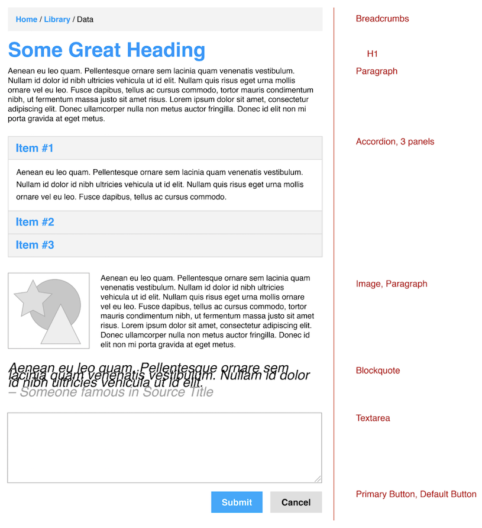
After reviewing the pros and cons for each platform, the UX team and I decided on moving forward with Fabricator.
Before making any major modifications to the platform, I planned a usability study to determine how well the platform met the developers' needs.
Each study session began with a brief overview of the tool, followed by an explanation of the exercise. The participant's goal was to find the corresponding code that was necessary to reproduce the mock-up I'd provided.
While the participants worked, I took notes on the ways that they interacted with the tool and asked probing questions around their intent when they got stuck.
The observations I made during the study were invaluable to improving the usability of the tool, especially because each participant seemed to have a unique approach to navigating the content.
Conclusion
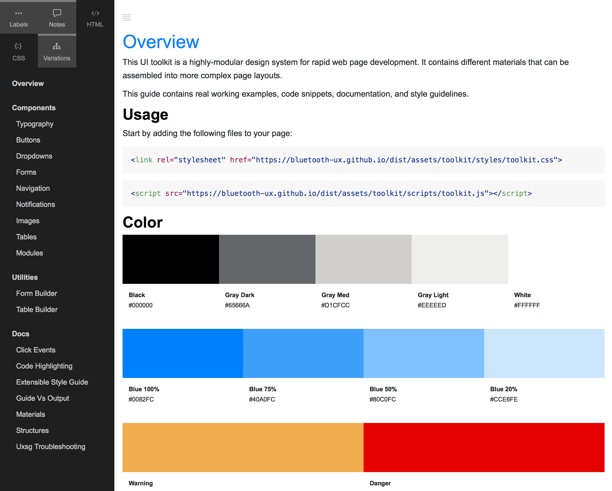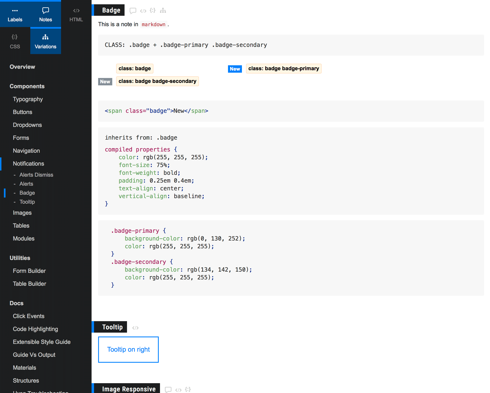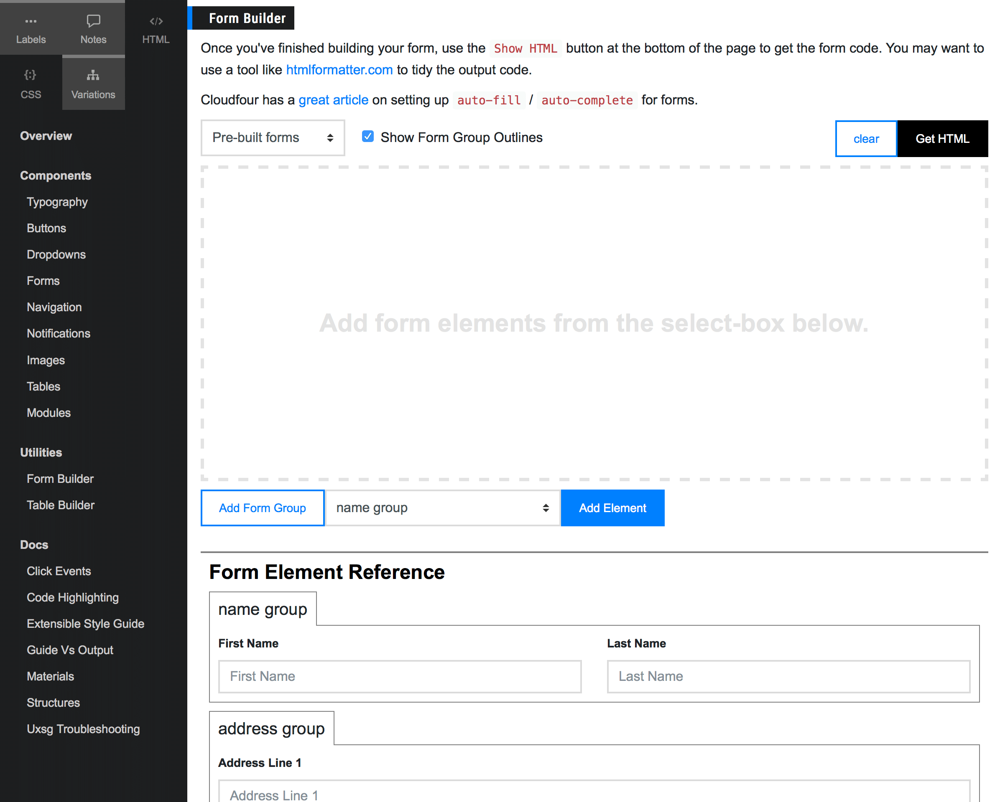(click to expand) collapse
After discussing my study observations with the team, I proposed a few modifications to the tool including an updated information architecture, and more robust content. The UX team also requested a number of features around navigation and content labels.
While the UX Engineer on staff migrated the remaining content from the old guides, I built out and documented a robust framework for generating content and supporting future updates.
Finally, I gave a presentation to the designers, developers, and product managers describing the goals of the project, and the features of the final product.
Over the course of our research, we'd discovered that many developers were aware of discrepancies in the guides and had a mild fear of relying too heavily on the content as a result. Faith in the tool was the final piece of the puzzle to improve adoption among development teams, and I used the presentation as an opportunity to build faith by explaining how the guide content is generated in a way that significantly reduces the opportunity for errors.
Thrilled with my work on their new font, Adam, the marketing director at Bob Books asked me to make a bid for their next game development contract.
Adam asked me to create a proposal that would demonstrate other gameplay methods and generally make the games more engaging.
Over the following month I designed a variety of spelling games; wrote a script; created illustrations, sound effects, and animations; and programmed a game in Unity with my friend Michael Afrides.
Research
Bob Books' existing games feature a single gameplay concept and individual spelling challenges. Each level is composed of simple line drawings and lacks any animation or color.
I believe that by telling a story with the challenges interspersed, the curiosity about story could become the compelling reason for progressing through the levels as opposed to simply completing each challenge for its own sake.
Click here to see Bob Books' original app that we were competing against.
Gameplay Concept 1
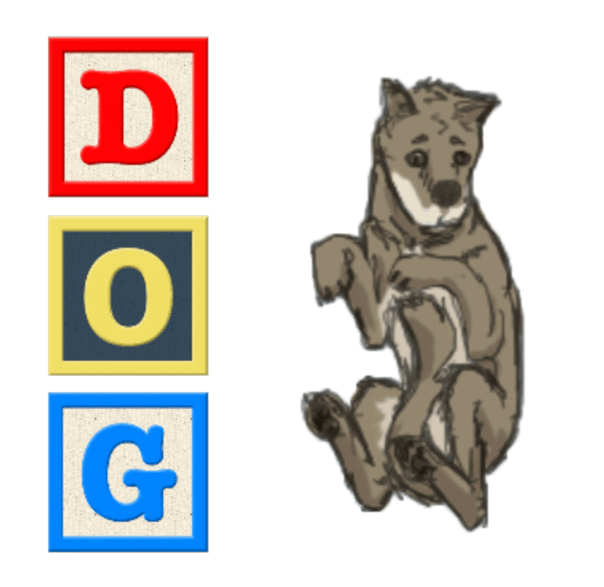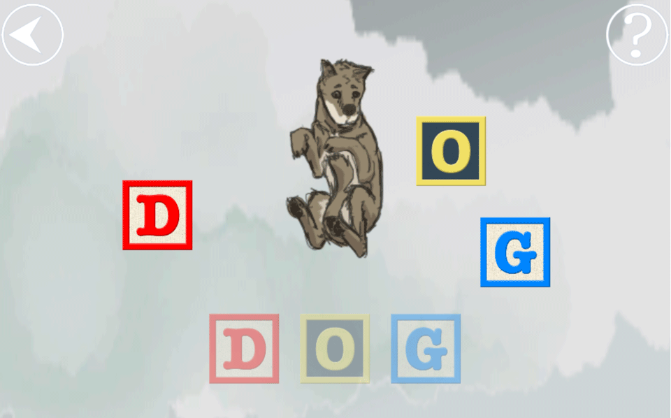(click to expand) collapse
To win the contract, we would need to show a better UX while also proving that we could reproduce their current gameplay modes.
The basic gameplay mode required spelling a word in left-to-right order. This is an easy task, so we spiced it up a little with some 3D animations.
We also wanted to show something new and different that would still be something a young child could accomplish.
Our second gameplay mode drops "random" letters from the top of the screen. To add a little silliness and playfulness, the letters are trapped inside raindrops, which the player has to catch and drop onto sponges to wring out the water.
We also used this opportunity to create an animated 'cut-scene' - a feature the existing games don't have.
To create a sense of accomplishment, I wanted each section of our proposed game to feel like an immersive experience with hidden animations and environmental changes that reflect game progress.
We created a challenge navigation screen (this farm scene) where the rain diminishes and the cats and dogs stop 'raining' once you save them.
By the end of the demo the rain has cleared and the scene is pleasant and sunny.
In the end the client decided to stick with their overseas developers who work for far less than we were willing to, so we didn't get the contract. Although it was disappointing that we weren't hired, it was a great experience creating this game from scratch on a new platform, and Michael used his experience here and at his next job to get a full-time game development role.
During my time at Amazon, one of my major projects revolved around learning how to collect demographic data from customers. The research I conducted is protected under NDA, so I can't disclose any specifics, but I can share the process and general learnings.
The Challenge
Some of the obvious solutions for collecting information are to ask for the information on user sign-up, to provide a gift in exchange for the information, or requiring the information in exchange for access to certain features.
Over the course of my research, I identified 5 key challenges to collecting demographic information from customers and designed solutions to address them.
While many companies may see great results in acquiring information like birthdays or ages from customers in exchange for annual birthday gifts, there's actually very little those companies can do to ensure the validity of the information. Case in point, at least one man has 365 registered Starbucks cards, each with a different birthday so he gets a free drink everyday. Not only can this be a very expensive proposition for the company, but it opens a "one-way door" to giving away gifts that can be very difficult to close again.
Information Accuracy
In a similar issue, Facebook (which has been very successful in collecting demographic data) has provided no incentive for truthful information. Even if Facebook were successful in collecting demographic data from 100% of their user base, I would argue that the data they've collected is almost worse than useless. Not only does it cost money to store all of that information, but without incentive to provide truthful answers, the data they have has such a high potential inaccuracy that any conclusions drawn would be suspect at best.
Coverage Percentage
Another challenge is collecting enough customer data to be able to draw meaningful conclusions. Even if you're only interested in the behaviors and habits of a particular demographic, unless you collect data from the majority of your user base, it can be difficult to determine what percentage of your customers in your target demographic you've collected information from.
Preserving Customer Trust
Customers we talked to were very comfortable with the idea of Amazon having their demographic information, but in spite of that, asking for customer information with little or no context made customers feel skeptical and wary. Essentially we found that if customers believed they had volunteered the information as in a profile, that was fine, but when we asked for it, it made them concerned about our intent.
Overcoming Customer Fear
Beyond concerns about our intent, customers in our studies consistently expressed concerns about being "profiled". Even believing that Amazon could provide them more interesting or relevant results, customers were afraid that we might do so by hiding results that we deemed irrelevant.
The Solution
To address cost of acquisition, we needed to provide a perceived benefit or value of some sort. This is relatively easy to do for free with digital services, but without a benefit directly related to the information collected, there's still no incentive for customers to provide truthful answers.
If we're interested in collecting customer birthdays, for example, there's very little we can do to tie a benefit to that. A solution needs to be relatively generic to appeal to a large percentage of the population, but each day of the year is so arbitrary that there's little specific value we can provide - hence the guy with a free "birthday" drink everyday at Starbucks.
So collecting a birthday is problematic because it can feel like 'sensitive' information and I would guess the majority of cases are really only interested in the year. So, instead trying to do something obvious by tackling birthdays head-on, we could instead just collect the piece we really care about -- age.
One way to get a person to volunteer their age might be to offer to show them things that other people their age are interested in. While it's true that customers could still lie about their ages, they're more likely to tell you the truth because you've tied the benefit directly to the value they hope to receive.
If you really need birthday for some reason, then once a customer has provided their age, you can more subtly "nudge" them to provide their birthday -- maybe even just so that their 'age' stays accurate.
The Cold-Start Problem
Customers feel safe providing their information when there is a clear value associated with it, so offering a tangible, directly-related benefit will always protect customer trust.
There is an additional challenge that comes up with the 'age' solution above, however, and that is what we call a "cold-start problem".
The challenge here is simple: until we've collected a substantial amount of customer data, we can't provide meaningful information to the customers.
Every business that relies on customer input faces this challenge, and there are many ways of overcoming it. It's up to each organization to determine the appropriate solution and pacing for their cold-start problem, but the general approaches come down to either focusing on a single group or grouping everyone together.
When it comes to grouping everyone, first you might show all people the same results, then later divide the customers into "Over 50" and "Under 50". When you have more data yet, divide ages by decade and so on.
Conclusion
Taking all of these challenges into account and addressing each with your solution can strongly benefit your collected data and help you earn trust with your customers.
Each interaction your customers have with you contributes to your cumulative relationship. Handle with care.

 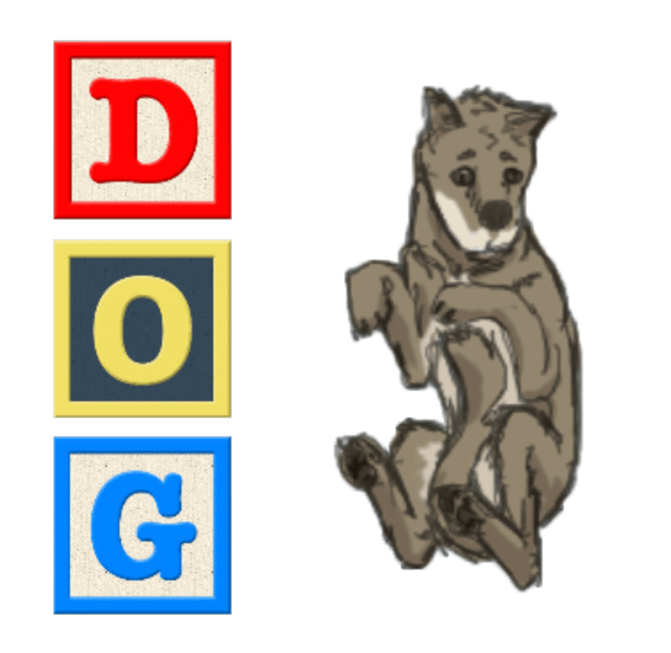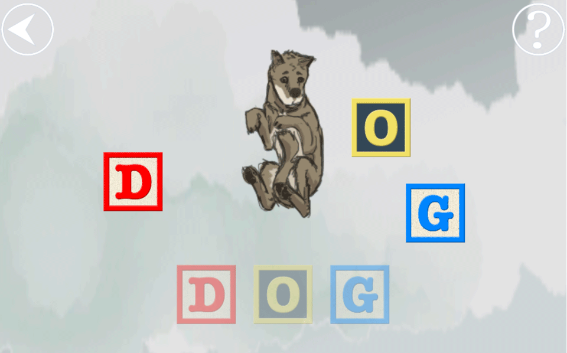
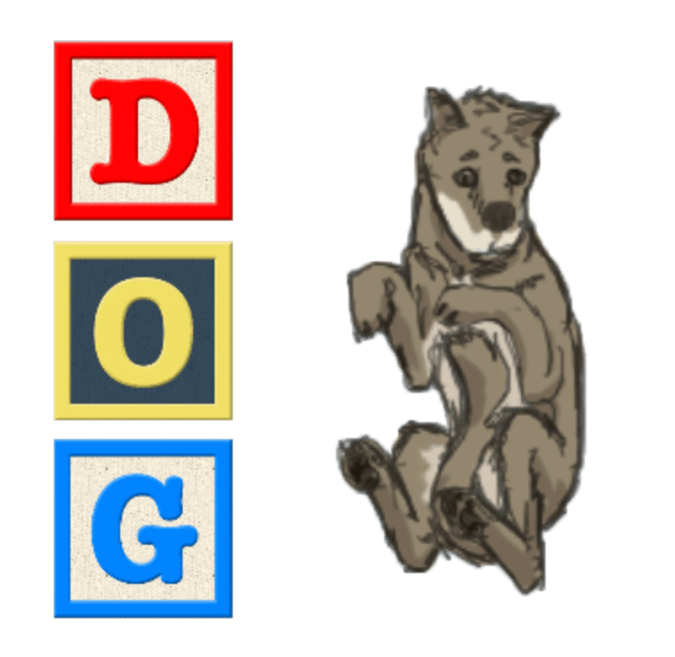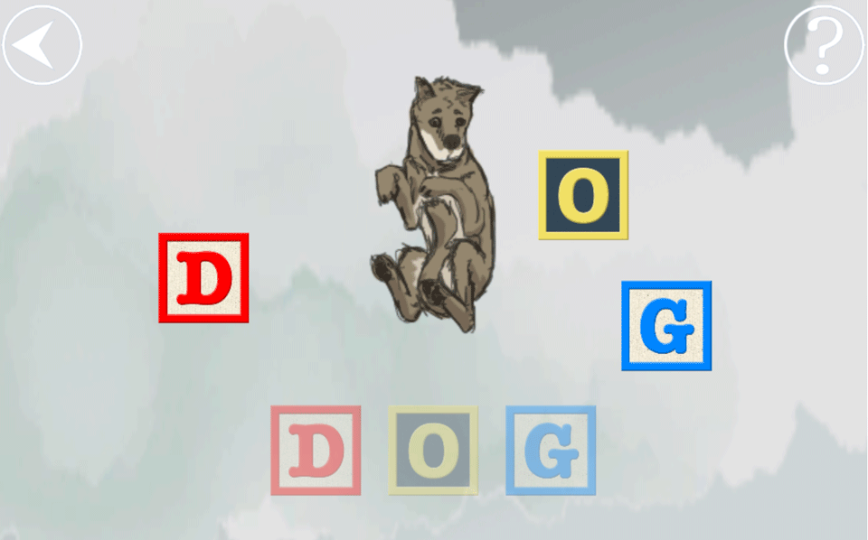 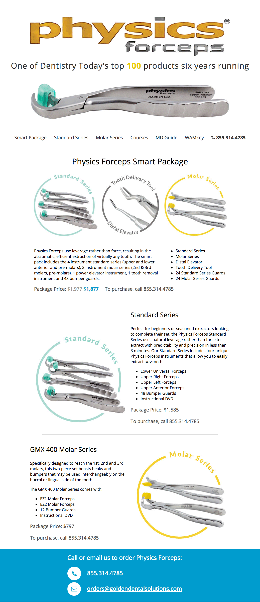
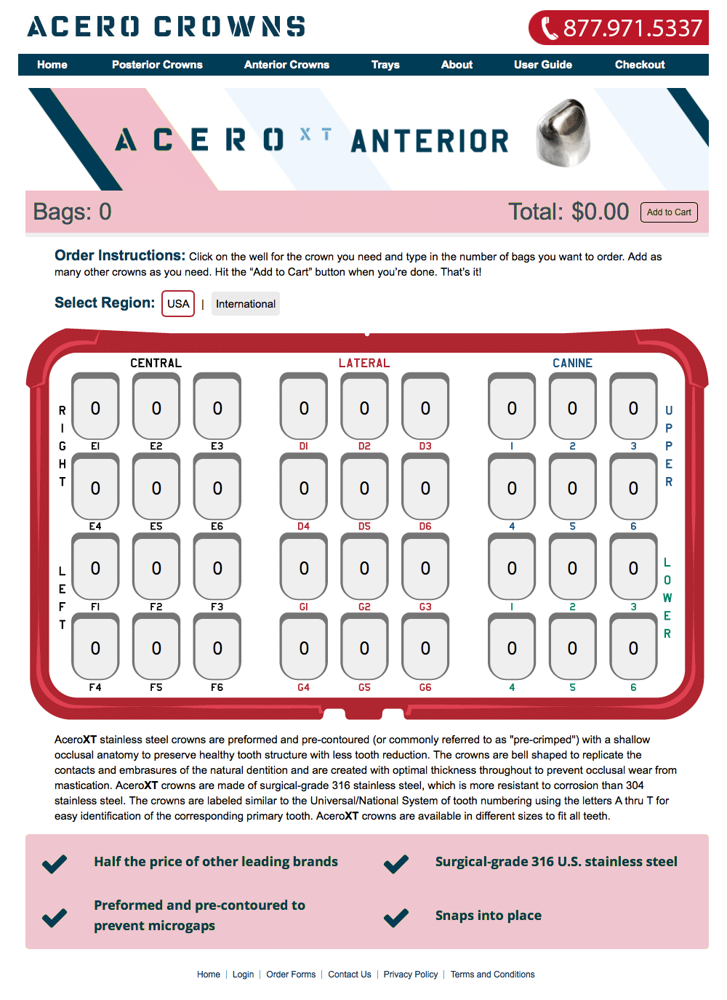
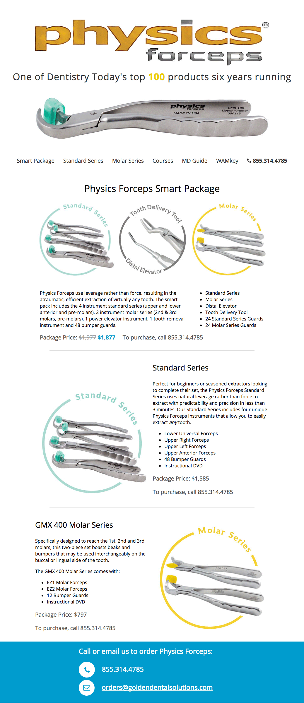
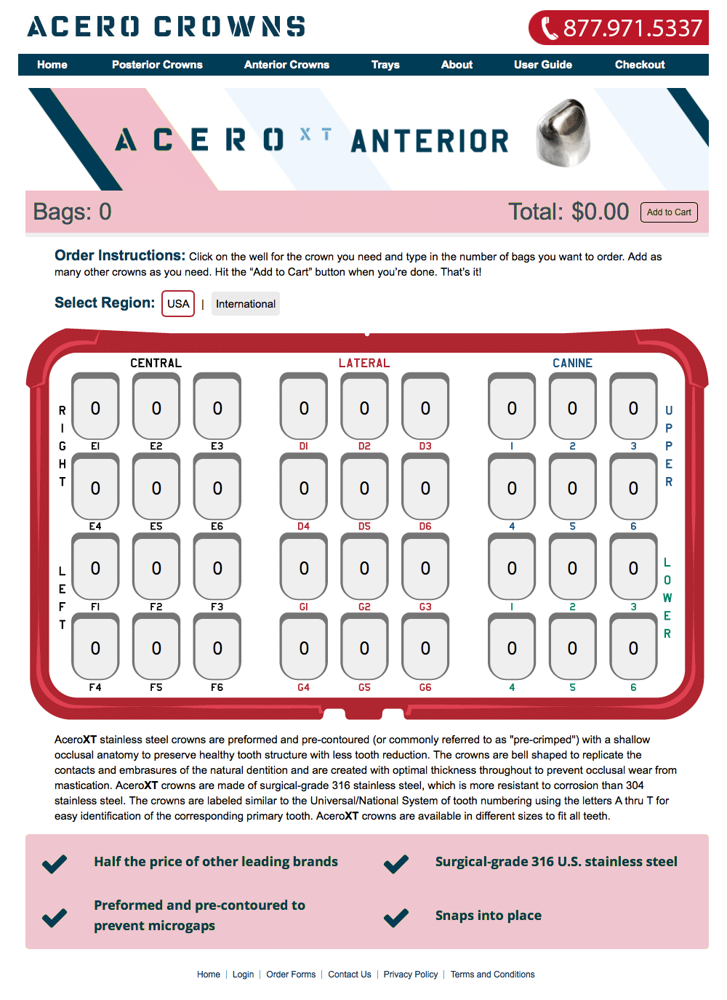


 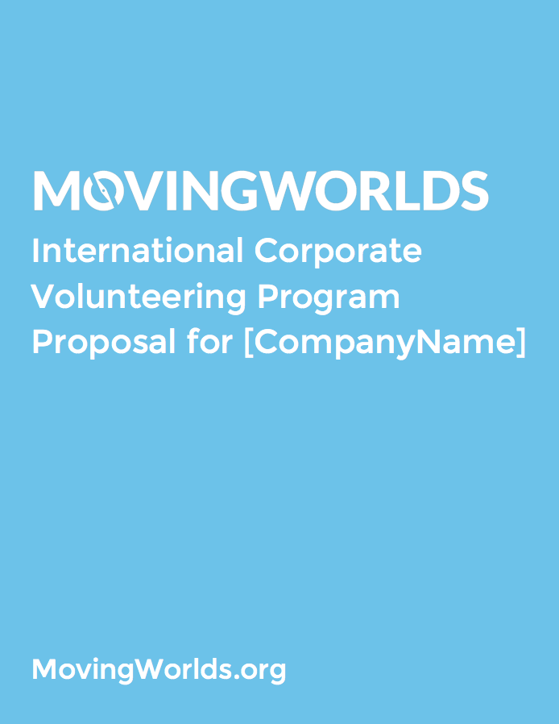
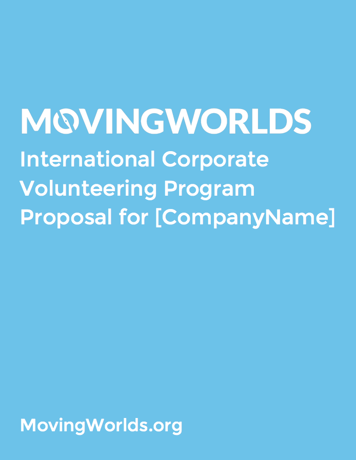


 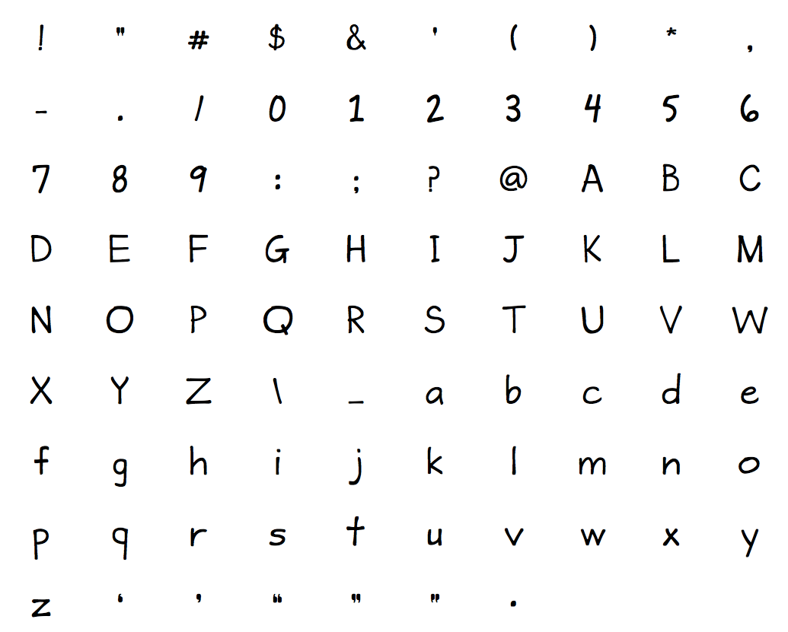
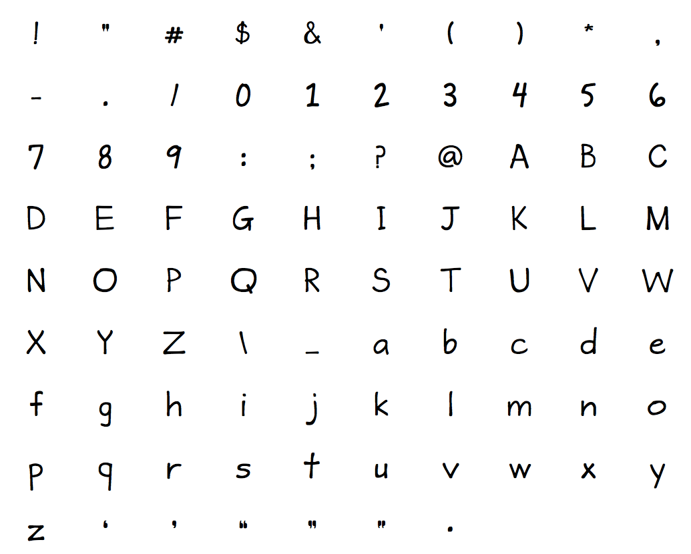